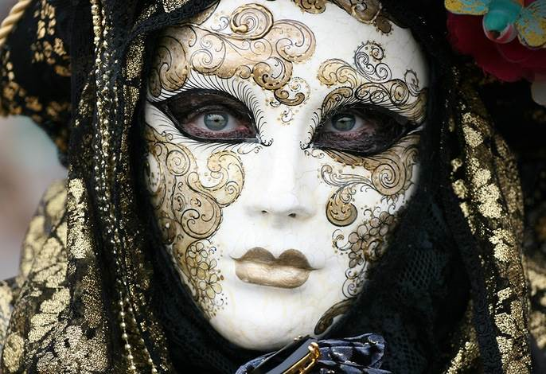

Новости
Венецианская маска — традиционный символ ежегодного венецианского карнавала. Маски использовались и в повседневной жизни с целью скрыть лицо. Это служило самым разнообразным целям: от романтических свиданий до совершения преступлений. Последние привели к запрету ношения масок вне карнавала незадолго до конца Венецианской республики. 